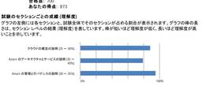
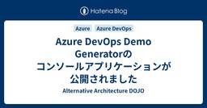

Alternative Architecture DOJO
https://aadojo.alterbooth.com/
オルターブースのクラウドネイティブ特化型ブログです。
フィード

エンジニア実務未経験中途採用のAZ900合格体験記
Alternative Architecture DOJO
中途採用で2025年1月に入社いたしました高田です。 AZ-900の試験を受けに行き、無事に合格してきました！ 個人的には『クラウドの概念の説明』は練習問題では満点をとることも多く、一番自信があった項目でしたのでできれば満点が欲しかったところです！ 逆に『Azureの管理とガバナンスの説明』は苦手と感じていた項目でしたので、一番得点率が高いのは少し驚きでした……。 話は変わりますが試験センターのすぐ近くにはお寿司屋さんがあり、合格するとそこでお寿司を食べるのが通例らしいです。 今回は引っ越しなどの新生活の準備でお寿司はお見送りしましたが、次なる資格を取得した暁には、絶対にそこのお寿司屋さんで美…
4日前

Azure DevOps Demo Generatorのコンソールアプリケーションが公開されました
Alternative Architecture DOJO
こんにちは、MLBお兄さんこと松村です。 1月はブログを書くことができませんでしたが、今年もどうぞよろしくお願いします。 Azure DevOps Demo Generator とは、Azure DevOps のデモプロジェクトを作成することができるアプリケーションです。 様々なテンプレートが用意されており、デモや検証の用途でそれなりにデータが登録されたプロジェクトが欲しい際に使用すると良いです。 learn.microsoft.com そんな Azure DevOps Demo Generator は Web アプリで提供されていましたが、コンソールアプリケーションとして公開されました。 d…
6日前

Azure Network Watcher の仮想ネットワークフローログを利用してみよう！
Alternative Architecture DOJO
はじめに こんにちは！最近日照時間が長くなってきて、日の明るい時間が多くてうれしいやしきんです🌞 2025年最初のブログは何にしようか考えていましたが、検証のために触る機会があった、仮想ネットワークフローログについて書こうと思います。 仮想ネットワークフローログとは 仮想ネットワークフローログは Azure Network Watcher の機能の一部です。 仮想ネットワークフローログを利用すると、仮想ネットワークを通過する IP トラフィックに関する情報をログに記録できます。 Azure Network Watcher は Azure の IaaSリソースである仮想マシンや仮想ネットワークな…
11日前
エンジニア未経験からローコードツールでSaaSサービスをつくってみた！
Alternative Architecture DOJO
こんにちは、オルターブースの中島です！ 2025年に入りもう1ヶ月が経とうとしていますね....！ 毎年思いますが、年末年始は本当に時間が進むのが早く感じます。今年も寒くはありますが、趣味の竹炭づくりを庭でできるのでとても嬉しいです🔥 去年のお話になりますが10月11日に福岡市のエンジニアカフェでオルターブース10周年イベントがあり、多くの方にご参加いただきました！👏✨ AADOJO1 そのイベントで登壇させていただきましたので、遅くなりましたがその登壇でお話したことをブログでご紹介したいと思います。 AADOJO2 登壇のタイトルは「エンジニア未経験からSaaSサービスをつくってみた」という…
16日前
.NET Conf 2024 Fukuoka x Osaka で登壇してきました！
Alternative Architecture DOJO
こんにちは、オルターブースエンジニアのはっしーです！ この間2025年が明けたかと思ったらもう1か月が経過しようとしていますね。 みなさんは今年の目標は立てましたか？ 私は以下のように目標を設定したので達成できるように頑張っていこうと思います！ Microsoft 資格取得：5個/年 ブログを書く：12本/年 コミュニティでハンズオンイベントをする：3回/年 アウェイなイベントで登壇する：1回/年 さて、今回は .NET Conf 2024 Fukuoka x Osaka に参加して登壇させていただいたので紹介したいと思います。 .NET Conf 2024 Fukuoka x Osaka と…
18日前
Azure Functions (.NET 9 Isolated) でSemantic Kernelを使用する
Alternative Architecture DOJO
Azure Functions (.NET 9 Isolated) でSemantic Kernelを使用する方法を紹介します
1ヶ月前
経営者の健康法がわかった話
Alternative Architecture DOJO
こんにちは。そして久しぶりですね。 オルターブースの小島です。 最近はブログ書く書く詐欺が横行していますが、僕もその一端を担っているということで非常によろしくないんですが、ブログって毎度書くネタを考えるのが面倒くさいのでなかなかどうして書けないんですよね。 弊社にはブログインセンティブという制度がございまして、弊社のブログに記事を公開するとインセンティブがもらえるんです。 これ結構もらえるんですよ。すごくないですか？ とある弊社メンバーがギターを買うということで、最近は楽器屋さんのキャンペーンで分割手数料が無料なんてやつもあるんですよね。 それで分割で買うと毎月の支払いがとても安くなるんです。…
1ヶ月前
GitHub Copilot の Multi-file editを利用して複数ファイルを編集しよう！
Alternative Architecture DOJO
こんばんは！しんば@shinbazです！ GitHub Universe 2024 でプレビューが開始されたMulti-file edit機能について、ユースケースや実際の編集画面をご紹介します。 Multi-file editing （複数ファイル編集）機能とは 現時点（2024年12月24日）において、Visual StudioとVisual Studio Codeのみで提供されている、複数ファイルに影響する形でGitHub Copilotにコードを提案させる機能です。 これまでのGitHub Copilotは単一ファイル編集でした これまでのGitHub Copilotは、単一のファイル…
1ヶ月前
社内の請求業務を自動化するシステムを構築してみる
Alternative Architecture DOJO
みなさんこんにちは！ オルターブースアドベントカレンダーの24日目を担当します、ローコードチームの中島です。 いよいよ明日がクリスマスですね！今年はクリスマスが平日なので、私は一足先に先週末に姪っ子ちゃん2人にクリスマスプレゼントを渡してきました🤶🎄 福岡市の公園はクリスマスのイルミネーションやクリスマスマーケット、ライブなどがあってとてもにぎわっています✨ adventar.org 先日の担当はルーキーの石川さんでした！ ぜひこちらも読んでみてください🐾 aadojo.alterbooth.com アジェンダ 今年の振り返り 請求業務の自動化を考える どのように自動化を開発していくのか 業務…
2ヶ月前
GitHub Copilot Free 提供開始！英語ドキュメントを翻訳しました！
Alternative Architecture DOJO
こんばんは、しんばです。 ご存じの方も多いかとおもいますが、GitHub Copilotの無償版、「GitHub Copilot Free」がリリースされました。 Visual Studio Code, 他IDE, GitHub.com上で利用できます。 ドキュメントがまだ英語しかないので、日本語でご紹介いたします。 私のコメントは（注釈：）として記載します。 ドキュメントはこちら👇️ docs.github.com GitHub Copilot Free を利用できない方 GitHubアカウントがEMU（Enterprise Managed User）の場合 すでにGitHub Copilo…
2ヶ月前
【Visual Studio】GitHub Copilotでのコミットメッセージ生成がより使いやすくなった話
Alternative Architecture DOJO
こんにちは！めゆです！ こちらの記事はオルターブースアドベントカレンダー23日目の記事になります。 ほかのアドベンター記事はこちら↓から adventar.org 前提 今回使用しているVisual StudioとGItHub Copilotのバージョンは下記になります。また、GitHub Copilotを使用するにはGitHub Copilotライセンスの契約が必要となります。 Microsoft Visual Studio Enterprise 2022 (64 ビット) - Preview Version 17.13.0 Preview 1.0 GitHub Copilot 17.13.…
2ヶ月前
arduino-cliとGitHub Actions self hosted runnerを使ってマイコン開発でもCI/CDを実現する
Alternative Architecture DOJO
こんにちは、先日娘とおやつでクッキーを食べていたら、ハート型のクッキーを食べながら「これから心臓バイパス手術を始めます！」と言い出してどこで覚えたのかと聞いたところ、妻が好きで見ている医療もののドラマを一緒に見ていたそうで、よく覚えてるなと感心した木村です。 本記事はオルターブースアドベントカレンダー2024の22日目の記事になります。ちなみにアイキャッチ画像はブログの内容からX(旧Twitter)のAIである「grok2」に作ってもらいました。 今回は、ArduinoのCLIツールであるarduino-cliを使って、マイコン開発でもCI/CDを実現する方法を紹介します。 arduino-c…
2ヶ月前
AI Shellを利用してみよう！
Alternative Architecture DOJO
はじめに こんにちは、オルターブース アドベントカレンダー2024 21日目を担当するやしきんです！ 12月21日ということでもうすぐクリスマスがやってきますね🔔 adventar.org 今回は最近気になっていたAI Shellについて試したことをブログに書きました。 AI Shellとは AI Shellとは、言語モデルを含むチャット インターフェイスを提供する対話型シェルのことです。 現在はパブリックプレビュー中の機能になっています。 利用できるOSはWindows、macOS、Linuxになります。 また、AI ShellではAIアシスタントとして、Azure OpenAI エージェン…
2ヶ月前
マーケティング領域な私が生成AIを活用している場面3つをご紹介！
Alternative Architecture DOJO
この記事はオルターブース Advent Calendar 2024の20日目の記事です。 こんばんは！しんば@shinbazです！ 皆さんは普段、生成AI（Generative AI）を活用していますか？ 私は日頃から業務サポートツールとして重宝しています。 どのような使い方をしているのか、プロンプト例含めご紹介したいと思います！ これから生成AIを活用されたい方へ向けて、活用アイデアになれば幸いです。 注意書き 1. 翻訳をしてもらう 2. 執筆補助 3. 理解度チェッカー 注意書き この記事では特定のLLMモデルについては取り扱いません。 筆者は業務情報を含む内容についてはMicrosof…
2ヶ月前
CRMとSFAのデータを綺麗にする。M365 Copilotの活用
Alternative Architecture DOJO
M365 Copliを活用した、「データの名寄せ作業」についての活用例をご紹介したいと思います。
2ヶ月前
【続】PayPayで作るお店屋さんごっこ用レジ作成(完成)
Alternative Architecture DOJO
こんにちは！オルターブースで一番レアキャラとなった気がするエンジニアのふるのです！ この記事はオルターブース Advent Calendar 2024の18日目の記事です。 昨日は馬場さんの「【Azure Monitor】デプロイ失敗の通知をLogic Appsを使ってやってみる」でした！ aadojo.alterbooth.com みなさんこちらの記事は記憶にありますでしょうか。。。 https://aadojo.alterbooth.com/entry/2022/12/14/100104 そう、一昨年に作成したがエラーが解消できず完成できなかったネタです。 長女が最近お金を使うことも増えて…
2ヶ月前
【最新】Visual Studio Code拡張機能のGitHub Copilot（github.copilot）設定を解説
Alternative Architecture DOJO
こんにちは！しんば@shinbazです！ 今年もいよいよあと2週間で仕事納めですね。 私は最後まで出張でバタバタしそうです。 さて、みなさんGitHub Copilotはどのエディタで利用されていますか？ 今回は、GitHub Copilot更新が最も早く降りてくることが多いVisual Studio Code拡張機能のGitHub Copilot（github.copilot）設定を改めて振り返ってみたいと思います！ GitHub Copilot Chatの拡張機能については別記事となります。 （～公開次第リンクを挿入予定～） 本日時点（2024年12月17日）でのGitHub Copilo…
2ヶ月前
【Azure Monitor】デプロイ失敗の通知をLogic Appsを使ってやってみる
Alternative Architecture DOJO
adventar.org こんにちは、エンジニアの馬場です！ この記事はオルターブース Advent Calendar 2024の17日目の記事です。 昨日は角田さんの「AIの進化に触れる：Microsoft Copilot Studioの魅力」でした～！ aadojo.alterbooth.com 今回は最近起こったこととその解決方法についてブログ記事にしたいと思います。 ざっくりあらすじを言うと、「デプロイをIaCで自動化したのはいいが、そのデプロイが失敗した場合に何か通知が欲しい」ということです。 IaC非常に便利ですよね！わたしも最近Bicepに触れる機会がありまして、その便利さに感動…
2ヶ月前
AIの進化に触れる：Microsoft Copilot Studioの魅力
Alternative Architecture DOJO
こんにちは、オルターブースのかどたです。 オルターブース Advent Calendar 2024 の16日目を担当します！ 時の流れは本当に早いもので、今年も残りわずかとなりました。これから本格的に寒くなっていくようですので、皆さんお身体を大事にお過ごしくださいね。 さて、今年もやっぱり AI！AI！AI！で話題の尽きない一年となりました。 私自身も沢山お世話になりましたので、今日はその数ある AI ツールの一つ Microsoft Copilot Studio について書きたいと思います！ Microsoft Copilot Studio とは Microsoft の公式サイト ではこのよ…
2ヶ月前
インデックス作成がもっと簡単に！多様なファイルをマークダウン化するMicrosoft製のライブラリMarkItDownを使ってみた。
Alternative Architecture DOJO
adventar.org こんにちは！オルターブースの木村龍太郎です！ この記事はオルターブース Advent Calendar 2024の15日目の記事です。 最近、RAG（Retrieval Augmented Generation）の構築を行いたく、CosmosDB for NoSQLでベクトル検索を試したいというニーズがありました。 ベクトル ストア - Azure Cosmos DB for NoSQL | Microsoft Learn そのため、格納したいデータはベクトル化しないとCosmosDBに保存できないので、 その前処理として、Word、Excel、PowerPointな…
2ヶ月前
開発環境を統一しよう！GitHub Codespacesを利用して環境作りを時短！
Alternative Architecture DOJO
こんにちは！しんば@shinbazです！ 東京、想像より寒く、つい温かい上着を購入し早速着ています😂 実は先日GitHub Sales Professionalという資格を取得しました。 GitHubサービスに関する一定の知識があることを証明するものなのですが、 GitHub社が準備するSales Materialsへの早期アクセスなども不定期的にあるらしく、楽しみです！ GitHubのご相談を受けていると、「コード管理とGitHub Copilot以外になにがあるの？」と聞かれることがあります。 GitHubにはたくさんの機能があるのですが、今回はその中でも Codespaces （コードス…
2ヶ月前
RAG & AI ワークフロー設計の悟りを求めて🤔
Alternative Architecture DOJO
はじめに こんにちは。寒すぎて手袋をつけてキーボードが叩けるように成りたいと考えている釘宮です。 今回は、RAG を含めた AI ワークフローを実現する際の設計で 四苦八苦 したので、その時に考えていた事と試した事についてご紹介します。 本記事はオルターブース Advent Calendar 2024の14日目の記事です。 (14日の土曜日です) adventar.org RAG とは 人工知能（AI）の進化に伴い、Retrieval Augmented Generation (RAG) は、情報検索と自然言語生成を融合させた革新的な手法として注目を集めています。RAGは、大規模言語モデル（L…
2ヶ月前
リアルタイム通信 アプリ実装入門(SignalR編)
Alternative Architecture DOJO
こんにちは！！ オルターブースの 倉地 です。 本記事はオルターブース Advent Calendar 2024の13日目の記事です。(13日の金曜日です) adventar.org はじめに .NETでリアルタイム通信を行うアプリを作ろうと思い通信処理に WebSocket を使おうと考えていたところ、「.NETでリアルタイム通信を実装する場合は、フォールバック等の考慮を含む接続処理やメッセージ送信処理を機能として備えており、WebSocket はもちろんそれ以外のプロトコルにも対応している SignalR がおすすめ」という情報を見つけました。今回は、その SignalR に関連して、 A…
2ヶ月前
GitHub Copilot活用術！#terminalLastCommandでコンテクストを補強しよう
Alternative Architecture DOJO
おはようございます、しんば@shinbazです！ 昨日から東京入りしているのですが、急激に寒くなってきました。急ぎ上着を準備しています・笑 本日はGitHub Copilot活用のためのTipsを1つご紹介したいと思います！ みなさん、 #terminalLastCommand は利用していますか？ #terminalLastCommandとは GitHub Copilotは、ユーザーが提供するコンテクスト（文脈情報）を利用し、合理的な提案を生成します。 コンテクストというのは、プロジェクトやコードを生成するための背景のことで、あらかじめGitHub Copilotに参照してほしいコードやファ…
2ヶ月前
.NET AspireのAzure Functions統合とAzureリソースデプロイを試す
Alternative Architecture DOJO
adventar.org こんにちは、MLBお兄さんこと松村です。 この記事はオルターブース Advent Calendar 2024の12日目の記事です。 昨日は花岡くんの「拡張性と保守性を高めるMediatR入門」でした。 aadojo.alterbooth.com 先日11月12日に .NET 9 が正式リリースとなりました。 .NET 9のリリースに合わせて、.NET Aspire もバージョン 9.0 がリリースとなっています。 dotnet.microsoft.com .NET Aspire 9.0 のアップデート内容の一つに、Azure Functions との統合があります。 …
2ヶ月前
拡張性と保守性を高めるMediatR入門
Alternative Architecture DOJO
こんにちは、オルターブース花岡です。@karyu721 本記事はオルターブース Advent Calendar 2024の11日目の記事です。 adventar.org はじめに ここ最近冷え込んでいますね。ダウンジャケットやコートが活躍する場面が増え、ますます本格的な冬が近づいているなあと感じるこの頃です。 さて、今回は.NETのライブラリMediatRを使ってCQS（コマンドクエリ分離の原則）やインプロセス内でのメッセージング処理について学んだので、コードを交えて解説します。 MediatRとは github.com MediatRはデザインパターンの一つであるMediatorパターンを.…
2ヶ月前
JAZUG Fukuoka リブートイベントでショートセッションを行いました
Alternative Architecture DOJO
はじめに こんにちは！最近ますます寒くなってきておりダウンジャケットの購入したやしきんです🧥 今回は今月行われた第1回 JAZUG Fukuoka リブートイベントと、ショートセッションでお話したことを書きました。 JAZUG Fukuoka とは JAZUG Fukuokaは、JAZUG(Microsoft Azureの日本のユーザーグループ)の福岡支部になります。 https://jazug.connpass.com/event/334629/ 以前は「ふくあず」というコミュニティでしたが、今回「ふくあず」をリニューアルして「JAZUG Fukuoka」となりました。 再始動ということでリ…
2ヶ月前
Azure Load Testing ネットワーク制限下での負荷テスト & 2024 アップデート振り返り!
Alternative Architecture DOJO
こんにちは！オルターブースのいけだです！ オルターブース アドベントカレンダー2024 9日目を担当します！ adventar.org 今回は、Azure Load Testing を活用して、ネットワーク制限下における負荷テストを実施してみます。 また、最後に2024年における Azure Load Testing の主なアップデートを振り返り、その進化を確認していこうと思います！💪 learn.microsoft.com 目次 目次 ネットワーク制限のある対象への負荷テスト 事前準備 Azure Load Testing 負荷テスト作成~実施 仮想ネットワーク統合 さいごに - 2024年…
2ヶ月前